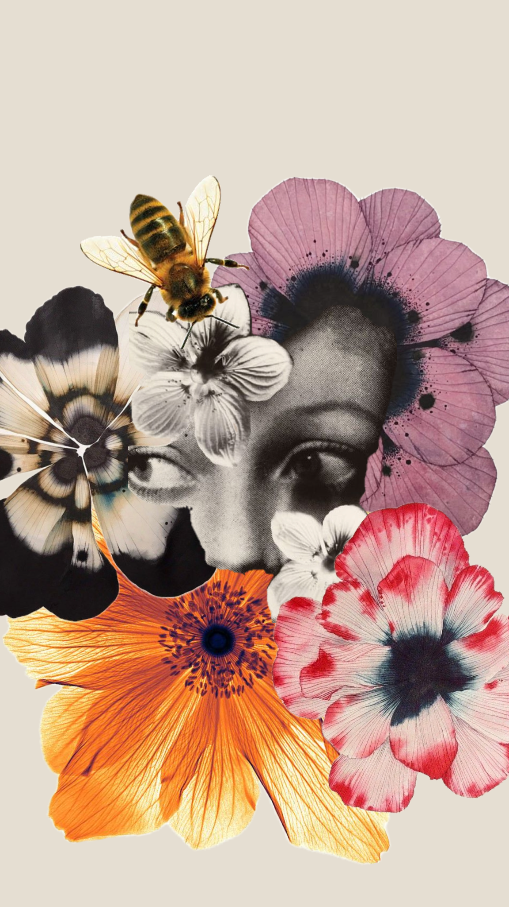

Más allá del espejo
No tienes que amar cada parte de ti todo el tiempo. Tu identidad, tus vínculos y lo que haces no caben en una fotografía.
NO ES UN RETO · NO HAY QUE COMPARTIR NADA
Preguntas que no califican
Fuera de cámara
¿Qué te importa hoy?
Haz una pausa y descubre +
Piensa en algo que disfrutaste, aprendiste o hiciste por alguien. No tiene que ver con cómo te ves.
Tu propia voz
¿Qué te gustaría escuchar?
Toca para descubrir +
Si quieres, imagina una frase amable o neutral que te gustaría recibir de alguien de confianza. No tienes que escribirla ni compartirla.
Límite
¿Qué conversación necesitas pausar?
Toca para descubrir +
Puedes silenciar una cuenta, cambiar de tema o pedir que no comenten sobre tu cuerpo.
Recordatorio
No le debes una imagen a nadie
Toca para descubrir +
Puedes participar, aparecer o no hacerlo. Tu valor no depende de una foto ni de una opinión sobre ella.
MANIFIESTO COLECTIVO · SIN NOMBRES
La belleza cambia. Tu dignidad no.
Elige una frase que quieras llevarte y deja una huella anónima en esta visita.
0 huellas en esta visita
No pedimos nombre ni guardamos la selección: el contador se reinicia al cerrar o recargar esta página.